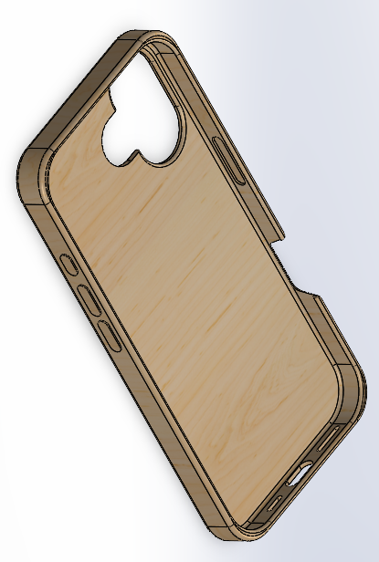
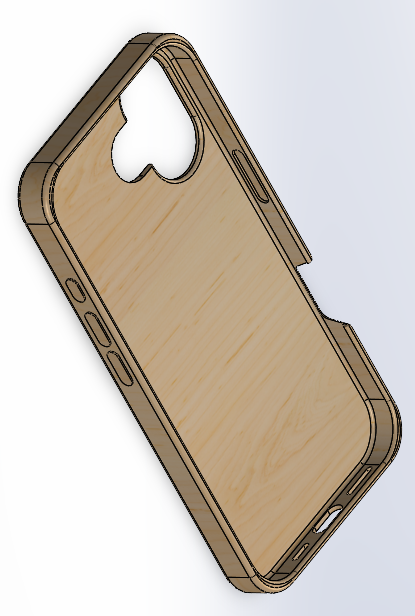
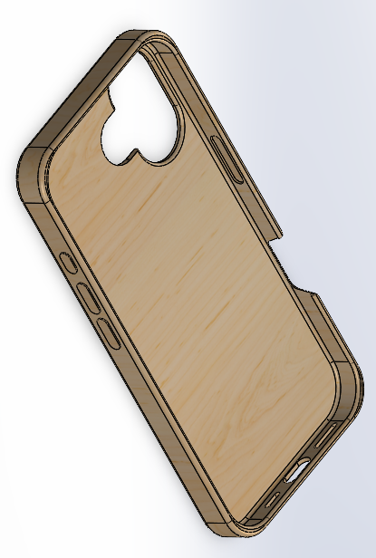
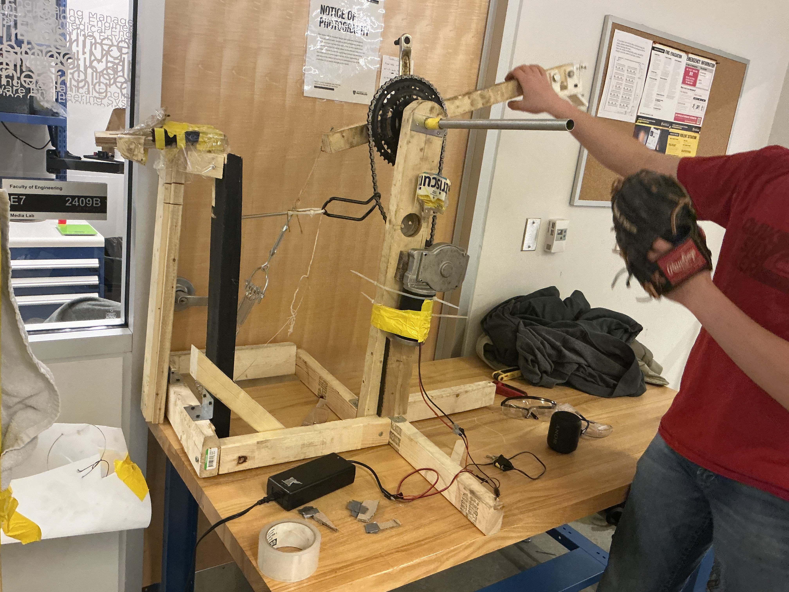
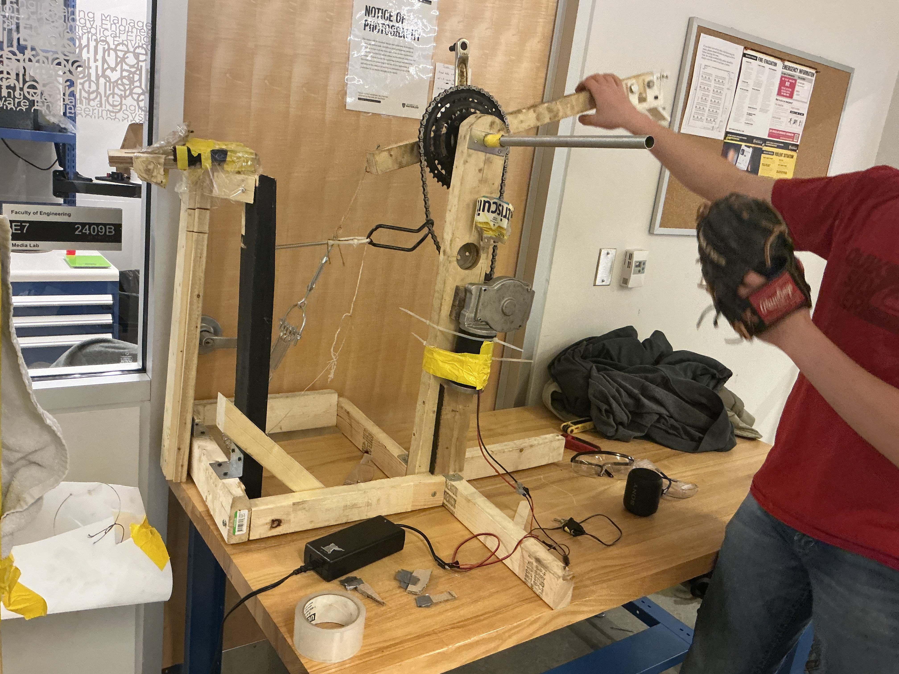

Using HTML/CSS, I wrote out six webpages to explain the concept of electromagnetic induction to high school and university-level students. These pages explain Faraday's and Lenz's Laws, describe their connection to Maxwell's equations and light waves, and provide example practice problems to test concepts. Original 3D animations, MathJax-rendered math, embedded YouTube videos, and carefully-selected external resource links make this website very informative for curious students. Additionally, basic cookies, a dark mode option, and interactive practice questions make it user-friendly.
Physics WebsiteAs a mechanical and HV team member, I contributed to the drivetrain and battery systems of our team's Hyperloop vehicle. For our 12kWh Li-ion battery back (total 40s6p), I installed Daly 10S active balancing and monitor, which lowered the maximum charge difference by 97% (from a risky 0.3V to a much safer 0.009V). I performed resistance calculations using Excel and tested discharging and charging of the battery using a protective relay while closely monitoring charge characteristics from the Daly unit and temperature readings from thermistors.
I also used AutoCAD and Solidworks on our team's BILD PDM to store and modify CAD components for the pod. Also, using the results from tests I conducted, I redesigned parts of the pack, such as relocating electrodes and parts of the structural casing and adding additional insulation jackets. Additionally, I milled four high-precision aluminum components for the lateral track guidance system.
As a personal project, I ventured to design and 3D-print a phone case for my new phone instead of buying a mass-produced injection-molded plastic case. The case was made of TPU 95A filament, an elastomer filament with high elasticity and tensile toughness, and printed on Bambu P1S printers. Due to its elastic yet very slightly stiff properties, I was able to create a tight-fitting case by modelling a 1.5mm thick shell around the model of the phone itself with zero tolerance. Shown below on the left is the fifth (left) and first (right) versions of the case, and on the right is the CAD of the fifth version.
One challenge when printing with TPU was that I had to remove many overhangs that would typically usually be possible in injection-molded cases because TPU sags and warps significantly during printing when not well-supported. Due to the removal of these structural supports, the case became flimsy, but it was found that increasing the shell thickness by 33% on the back increased the rigidity to an acceptable level. Also, finding the right dimensions for compliant buttons was difficult because contrary to my intuition, the button holes required an interference fit instead of a transition fit to flex well, and this cost me half a dozen reprints. I also attempted printing with stiffer, but still ductile filaments like PETG, but those cases were too rigid to install on the phone and proved to be too stiff for working flexible buttons.
For the ME 100 toy design project, our group set out to prototype a machine that could play a game of catch with the user. Footage of the final product was lost, but a clip of a late prototype version is shown below. The Fatherless Catch first receives a thrown ball by catching it with the net, funnelling the ball to a holder, and letting loose of a spring-driven arm that scoops up the ball and snaps forward, throwing the ball. The drivetrain consists of an AC/DC converter transforming 120V AC outlet potential into 12V DC with a maximum current of 10 amps. When switched on, it supplies the full 120W to the stepper motor which, along with a 4:1 bike chain gear reduction cranks the catapult back with an estimated torque of 16.3 N*m. I was responsible for soldering the drivetrain circuitry and helping to develop the chain gear reduction, frame, and mechanical joints in the machine.
 
I worked as a renovation contracter for over a year, helping my employer construct outdoor features like decks and patios, fences, stairs, and pavers. I learned to drill screws, demolish old concrete with a jackhammer, mix and handle concrete, sand surfaces, and do woodworking with many types of saws (e.g. table saw, mitre saw, circular saw, jigsaw).